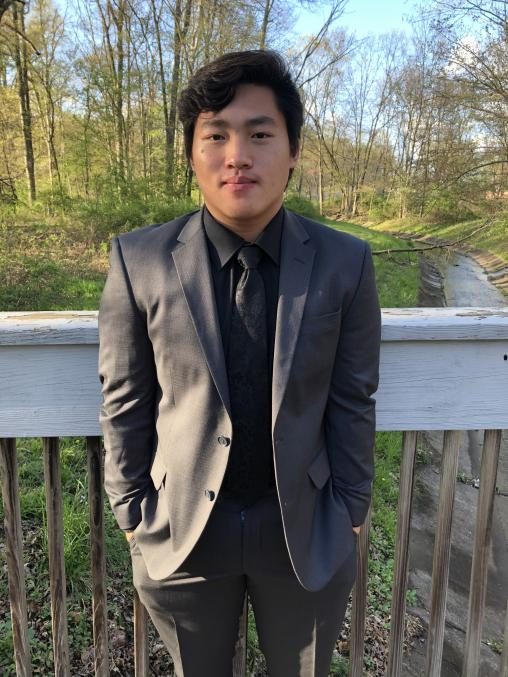
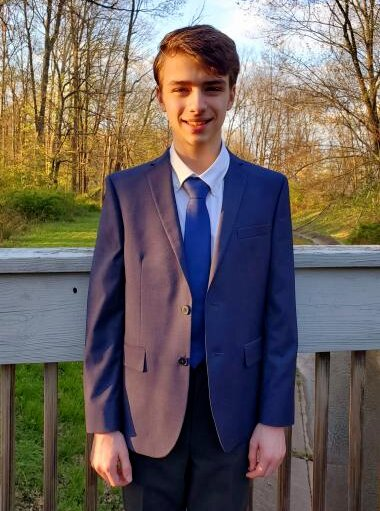
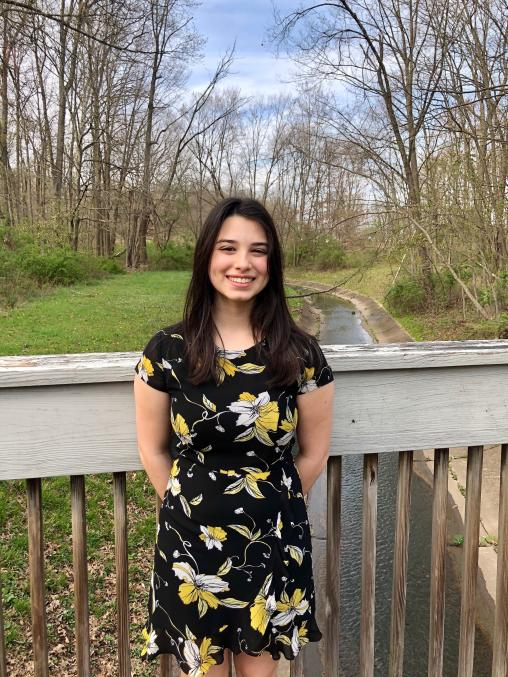
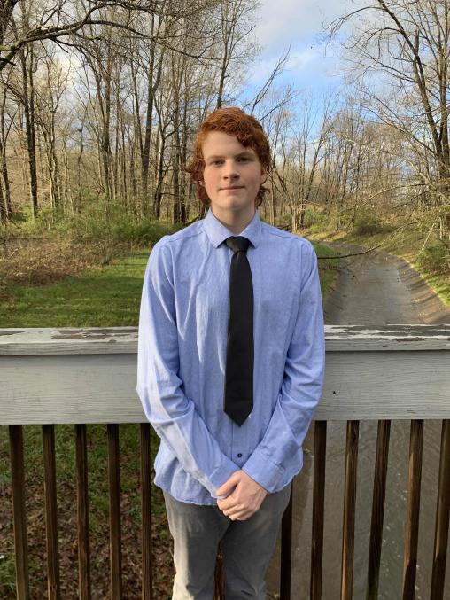

Eriksen Sandaire: Co-President

Keaton Hawkins: Co-President
Eriksen and Keaton are juniors at the Union County Academy of Law & Justice and Union County Academy for Information and Technology respectively. While Eriksen takes classes such as AP Calculus BC, AP U.S. Government and Politics, and AP Psychology, Keaton takes classes like AP Computer Science, AP Microeconomics and Macroeconomics, and AP Calculus AB. Eriksen has been nominated by his school to be the sole participator in a leadership camp called HOBY. He has also led two separate Relay for Life teams as well as other club activities such as marching band. Keaton is passionate about computer science, having knowledge in HTML, CSS, Javascript, Java, Python, C, and Oracle SQL. He has participated in a UCVTS hackathon and loves to code. The Co-Presidents enjoy many of the same activities together such as music, tennis, and cooking.

Harlie Dultz: Secretary
Harlie is a junior at Union County Academy of Exercise Physiology. She takes classes like AP Calculus AB, Dynamics of Health Care, Medical Terminology, Anatomy and Physiology, and Emergency Health Care. Harlie has volunteered as a teacher’s assistant at Sunday Hebrew School in Summit, New Jersey. Not only is she responsible, organized, and conscientious, but also incredibly sociable. Her bubbly attitude brightens the mood of the whole company. As a hobby, Harlie is a passionate watcher and reader of Japanese media.

Ian Zane: Treasurer
Ian is a junior at Union County Academy of Allied Health and Sciences. He takes rigorous courses such as AP Calculus BC, Introduction to EKG, and Anatomy and Physiology. Ian is working as a veterinarian’s assistant and as an Eagle Scout, he contributed to a disabled learning center. Ian was also a part of the crew for a local musical. He is interested in biomedical engineering but is a part of numerous musical ensembles as well.